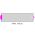

MultiSwitchSet Boolean expression that is associated with the first active input signal |

|
Information
This information is part of the Modelica Standard Library maintained by the Modelica Association.
The block has a vector of Boolean input signals u[nu] and a vector of (time varying) Boolean expressions expr[:]. The output signal y is set to expr[i], if i is the first element in the input vector u that is true. If all input signals are false, y is set to parameter "y_default" or the previous value of y is kept if parameter use_pre_as_default = true:
// Conceptual equation (not valid Modelica)
i = 'first element of u[:] that is true';
y = if i==0 then (if use_pre_as_default then pre(y)
else y_default)
else expr[i];
The usage is demonstrated, e.g., in example Modelica.Blocks.Examples.BooleanNetwork1.
Parameters (3)
| use_pre_as_default |
Value: true Type: Boolean Description: set true to hold last value as default (y_default = pre(y)) |
|---|---|
| y_default |
Value: false Type: Boolean Description: Default value of output y if all u[i] = false |
| nu |
Value: 0 Type: Integer Description: Number of input connections |
Inputs (1)
| expr |
Default Value: fill(false, nu) Type: Boolean[nu] Description: y = if u[i] then expr[i] else y_default (time varying) |
|---|
Connectors (2)
| u |
Type: BooleanVectorInput[nu] Description: Set y = expr[i], if u[i] = true |
|
|---|---|---|
| y |
Type: BooleanOutput Description: Output depending on expression |
Used in Examples (1)
|
Modelica.Blocks.Examples Demonstrates the usage of blocks from Modelica.Blocks.MathBoolean |